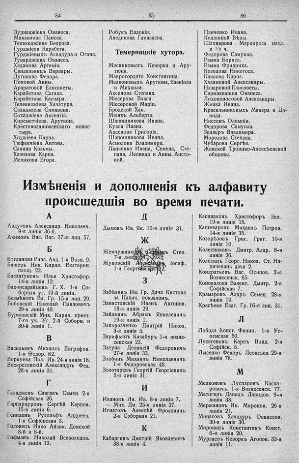

Лист источника 534
Скан

Распознанный текст
84
Зурнаджіева Ованеса.
Микаилова Паноса.
Тепекеджіева Бедроса.
Гурджіева Карабета.
Гурджіевыхъ Асвадура и Огана.
Туварджіева Ованеса.
Хадамова Артемія.
Сандальянцъ Варвары.
Дутикова Федора.
Поповой Анны.
Араратовой Елисаветы.
Карабетова Сагака.
Карабетова Каспара.
Тепекеджіева Хачатура.
Сахаджіева Симавона.
Сохаджіева Аксентія.
Киреметчіева. Арутюна.
Крестовоздвиженскаго монас-
тыря.
Ходжіева Карпа.
Тюфекчіева Антона.
Савина Козьмы.
Хазизова Карпа.
Меликова Егора.
85
Робукъ Евдокіи.
Аведикова Гамазаспа.
Темерницкіе хутора.
Мясниковыхъ Кеворка и Ару-
тюна.
Маврогордато Константина.
Мелконовыхъ Арутюна, Езекіила
и Михаила.
Аксенова Степана.
Міесерова Власа.
Міесеровой Маріи.
Бродской Хаи.
Мюнхъ Альберта.
Шапошникова Ивана.
Кукса Ивана.
Аксенова Григорія.
Шапошникова Ивана.
Асмолова Владимира.
Панченко Ивана, Семена, Сте-
пана, Леонида и Анны, Аисто-
вой.
86
Панченко Ивана.
Кошкиной Вѣры.
Шахнарова Мардироса насл.
и 1/9 ч.
Федорова Самуила.
Рамма Бориса.
Рамма Фридриха.
Козодова Никогоса.
Каялова Карпа.
Хадамовой Александры.
Назаровой Елисаветы.
Сармакешева Ованеса.
Лихононосовой Александры.
Жмака Ивана.
Красильниковыхъ Макара и Да-
вида.
Ниссенъ Олимпіи.
Федорова Самуила.
Зеллеръ Владимира.
Морозова Степана.
Чубарова Сергѣя.
Женской Троицко-Алексѣевской
общины.
Измѣненія и дополненія къ алфавиту
происшедшія во время печати.
А
Авдуловъ Александр. Николаев.
9-я линія 36-б.
Акимовъ Вас. Вас. 37-я лин. 57.
Б
Богданова Рипс. Авд. 1-я Возн. 9.
Баліевъ Ник. Кирил. Екатерин.
площ. 22.
Басхатуновъ Илья Христофор.
14-я линія 12.
Бахчисарайцевъ Г. Х. 1-я Со-
борная уг. 10-й линіи.
Безмѣновъ Вл. Гр. 15-я лин. 29.
Бобовскій Николай Павловичъ
29-я линія 49.
Буржинскій Мих. Кирил. прист.
7-го уч. Уг. 2-й Соборн. и
30-й линіи 1.
В
Васильевъ Михаилъ Евграфов.
1-я Ѳедор. 62.
Воркуева Пол. Ив. 24-я линія 18.
Воскресенскій Александръ Фед.
28-я линія 31.
Г
Галаджевъ Саагакъ Семен. 2-я
Софійская 26.
Гарпарцуровъ Сергѣй Карпов.
15-я линія 6.
Генихенъ Рудольфъ Андреев.
1-я Софіевская 3.
Головецъ Ицко Айзик. Донской
8-й и 6-й.
Гофманъ Николай Всеволодов.
4-я линія 12.
Д
Дымовъ Ив. Як. 10-я линія 31.
Ж
Жемчужниковъ Германъ Степ.
7-я линія 14.
Жуковскій Александръ Іосиф.
1-я Георгіевская 32.
З
Забѣлинъ Ив. Гр. Дача Кистова
за Нахич. вокзаломъ.
Завистовскій Иванъ Антонов.
18-я линія 29.
Зайдманъ Абрамъ Янкелевичъ
19-я линія 1.
Запорожченко Дмитрій Никол.
3-я линія 5.
Зарифьянъ Качабуръ 1-я возне-
сенская 23.
Затуна Деонисій Федоровичъ
27-я линія 33.
Злобинъ Михаилъ Николаевичъ
1-я Федоровская 48.
Золотаревъ Георгій Георгіевичъ
5-я линія 31.
И
Ивановъ Ив. Ив. 8-я линія 7.
— Мих. Дм. 25-я линія 27.
Игнатовъ Алексѣй Фроловичъ
2-я Соборная 21.
К
Кабаргинъ Дмитрій Яковлевичъ
38-я линія 4.
Капанаковъ Христофоръ Зах.
19-я линія 15.
Кашеваровъ Михаилъ Петров.
14-я линія 35.
Козорѣзовъ Григ. Григ. 10-я
линія 10.
Колесниковъ Дмитр. Алдр. 8-я
линія 26.
Колесинъ Георг. Никол. Ст. На-
хичевань дача 2.
Кондратьевъ Вас. Осипов. 2-я
Вознесенск. 65.
Коновалова Валент. Дмитр. 2-я
Софійская 7.
Крамаровъ Алдръ Семен. 28-я
линія 19.
Красѣева Екат. Гр. 16-я лин. 31.
Л
Лобода Конст. Филип. 1-я Ус-
пенская 50.
Лусегеновъ Карпъ Влад. 2-я
Софійск. 5.
Лысенко Федоръ Леонтьев. 29-я
линія 78.
М
Мелконовъ Луспаронъ Каспа-
ровичъ. 1-я Вознесенск. 77.
Метцгеръ Давидъ Давидов. 9-я
линія 38.
Мержановъ Ив. Миронов. 26-я
линія 21.
Минасовъ Хачадуръ Ованесов.
30-я линія 30.
Миронинъ Константинъ Конст.
6-я линія 20.
Мурзаевъ Кеворкъ Агопов. 33-я
линія 11.